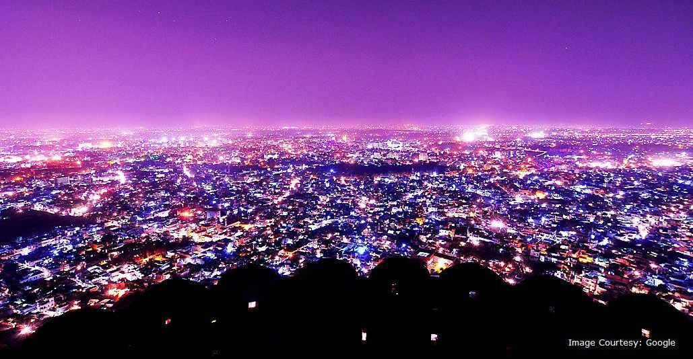

TAJMAHAL
An immense mausoleum of white marble, built in Agra between 1631 and 1648 by order of the Mughal emperor Shah Jahan in memory of his favourite wife, the Taj Mahal is the jewel of Muslim art in India and one of the universally admired masterpieces of the world's heritage.
PATAN
Patan, the former capital of Gujarat, is a place famous for Patola sarees, one of the finest hand-made textiles in the world. One can see this exquisite fabric being woven here. The Patan Patola is one of the finest hand-woven textiles produced the world over.
DARJEELING
Darjeeling is a town in India's West Bengal state, in the Himalayan foothills. Once a summer resort for the British Raj elite, it remains the terminus of the narrow-gauge Darjeeling Himalayan Railway, or “Toy Train,” completed in 1881. It's famed for the distinctive black tea grown on plantations that dot its surrounding slopes. Its backdrop is Mt. Kanchenjunga, among the world’s highest peaks.
MANALI
Manali is a high-altitude Himalayan resort town in India’s northern Himachal Pradesh state. It has a reputation as a backpacking center and honeymoon destination. Set on the Beas River, it’s a gateway for skiing in the Solang Valley and trekking in Parvati Valley. It's also a jumping-off point for paragliding, rafting and mountaineering in the Pir Panjal mountains, home to 4,000m-high Rohtang Pass.

Jodhpur And Jaismer
Jaipur is the capital of India’s Rajasthan state. It evokes the royal family that once ruled the region and that, in 1727, founded what is now called the Old City, or “Pink City” for its trademark building color. At the center of its stately street grid (notable in India) stands the opulent, colonnaded City Palace complex. With gardens, courtyards and museums, part of it is still a royal residence.
SHIMLA
Shimla is the capital of the northern Indian state of Himachal Pradesh, in the Himalayan foothills. Once the summer capital of British India, it remains the terminus of the narrow-gauge Kalka-Shimla Railway, completed in 1903. It’s also known for the handicraft shops that line The Mall, a pedestrian avenue, as well as the Lakkar Bazaar, a market specializing in wooden toys and crafts.